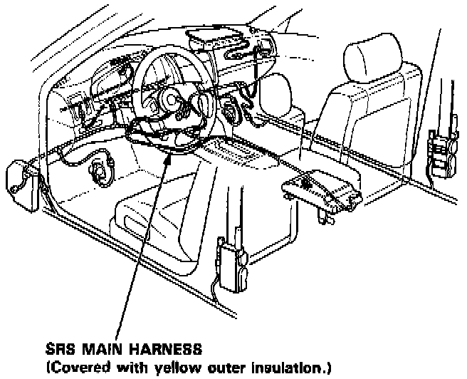
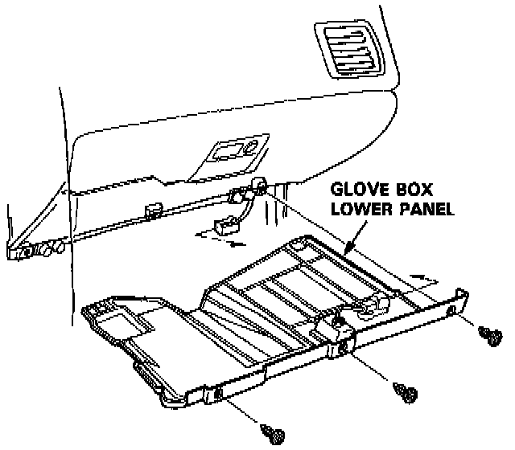
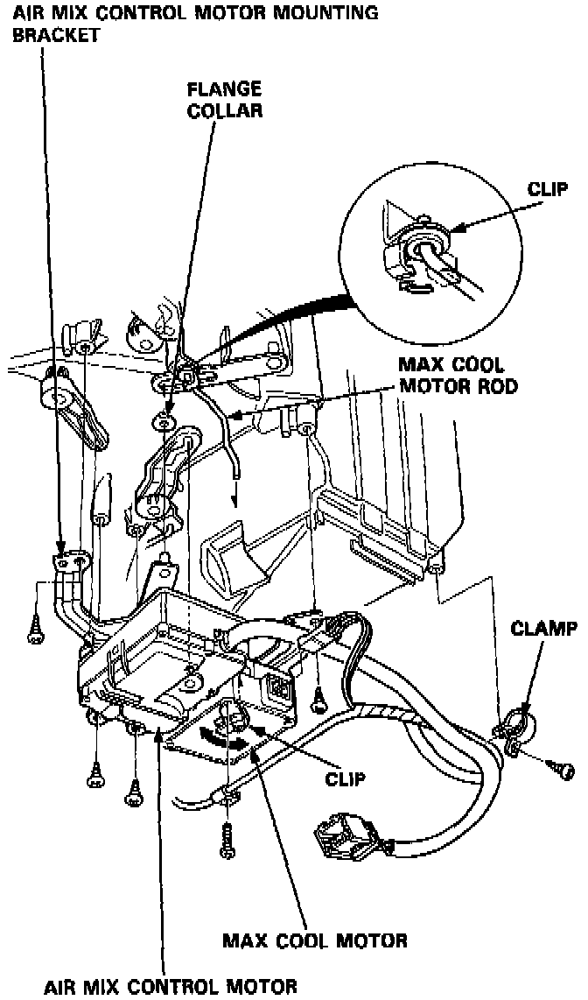
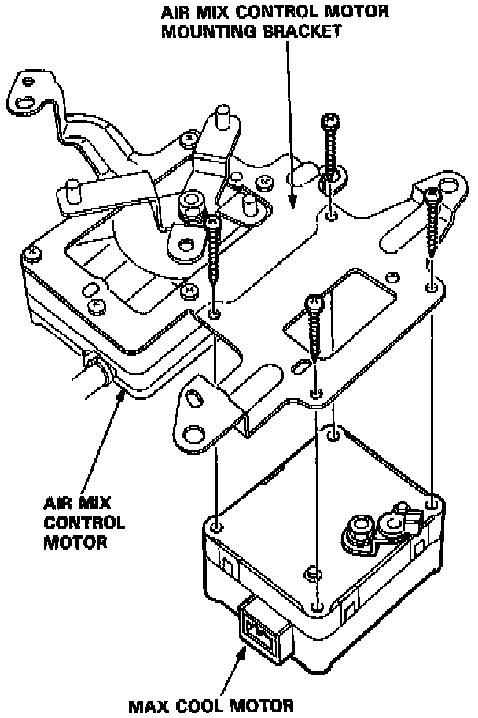

Automatic Climate Control

CAUTION:
- All SRS wiring harnesses are covered with yellow outer insulation.
- Before disconnecting any part of the SRS wire harness, install the short connectors.
- Replace the entire affected SRS harness assembly if it has an open circuit or damaged wiring.

1. Remove the glove box lower panel and disconnect the connector from it.

2. Disconnect the air mix control motor connector and clamp, then disconnect the max cool motor connector.
3. Unhook the clips from the max cool motor rod, then remove the mounting screws and air mix control motor mounting bracket.

4. Remove the max cool motor from the air mix control motor mounting bracket.
5. Install the air mix control motor in the reverse order of removal. After installation, make sure the air mix control motor operates smoothly.